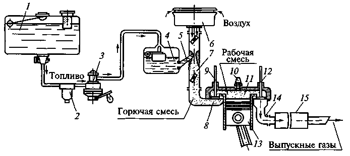

Тема 2
Автомобильные
бензины, свойства и показатели, влияющие на смесеобразование и подачу
Требования к качеству
бензинов
Автомобильным бензином называют нефтяную
фракцию, представляющую смесь углеводородов, которая выкипает при температурах
от 40 до 200 °С.
К бензинам предъявляются следующие
требования:
— обеспечение нормального и полного
сгорания полученной смеси в двигателях (без возникновения детонации);
— образование горючей смеси необходимого
состава;
— обеспечение бесперебойной подачи в
систему питания;
— отсутствие коррозионного воздействия
на детали двигателя;
— незначительное образование отложений в
двигателе;
— сохранение качеств при хранении и
транспортировке.
Каждое из перечисленных требований
выражается одним или несколькими показателями, которые устанавливаются
соответствующими ГОСТами.
Основными показателями качества бензинов
являются детонационная стойкость, фракционный состав, давление насыщенных
паров и химическая стабильность.
Рассмотрим
систему питания карбюраторного двигателя, обеспечивающую образование
топливовоздушной смеси определенного состава, схема которой представлена на
рис 1.

1 — топливный бак; 2 — фильтр-отстойник; 3 —
диафрагменный насос; 4 —поплавковая камера карбюратора; 5 —
жиклер; 6 — воздухоочиститель; 7 — смесительная камера
карбюратора; 8 — впускной трубопровод; 9 —
впускной клапан; 10 — свеча зажигания; 11 — камера
сгорания; 12 — выпускной клапан; 13 — рабочий
цилиндр; 14 — выпускной трубопровод; 15 — выхлопная труба с
глушителем и искрогасителем
Топливо заливают в бак 7 через горловину
с сетчатым фильтром. Диафрагменный насос 3 подает топливо в
фильтр-отстойник 2, где оно очищается от механических примесей и воды, а затем
в поплавковую камеру карбюратора 4.
Карбюратор предназначен для
приготовления горючей смеси определенного состава, соответствующего режиму
работы двигателя. В такте всасывания топлива в смесительной камере 7 карбюратора
создается разрежение и туда поступает воздух, предварительно прошедший очистку
в воздухоочистителе 6. Поток поступившего воздуха и
захваченное им из жиклера 5 топливо перемешиваются во впускном
трубопроводе 8, образуя горючую смесь, которая через
открывшийся в определенный момент впускной клапан 9 поступает
в камеру сгорания 11. Здесь горючая смесь смешивается с
небольшими остатками продуктов сгорания, в результате чего образуется рабочая
смесь.
В такте сжатия давление и температура
рабочей смеси в камере сгорания возрастают, и после воспламенения ее искрой
свечи зажигания 10 начинается такт рабочего хода поршня
цилиндра, т. е. происходит преобразование тепловой энергии в механическую.
В последнем такте работы двигателя
отработавшие газы из камеры сгорания выбрасываются в атмосферу через
открывшийся выпускной клапан 12, выпускной трубопровод 14 и
выхлопную трубу с глушителем и искрогасителем 15.
В карбюраторных двигателях процесс
дозировки топлива, производимый калиброванными отверстиями жиклеров, и его
уровень в поплавковой камере зависят от плотности и вязкости бензина.
Свойства и показатели
бензинов, влияющие на смесеобразование
Показателями бензинов, влияющими на
смесеобразование, являются плотность, вязкость, поверхностное натяжение и
испаряемость.
Плотность
— отношение массы вещества к его объему. Плотность бензинов (от 690 до 810 кг/м3 при
температуре 20 °С) наряду с поверхностным натяжением оказывает влияние на
качество распыления топлива в карбюраторе, во впускном трубопроводе и цилиндрах
двигателя вплоть до перехода его в парообразное состояние. Чем меньше плотность
бензина, тем более мелкую структуру будет иметь распыленное топливо, что
обеспечит лучшее перемешивание его с воздухом. Это, в свою очередь, улучшит
полноту сгорания, т. е. повысит экономичность двигателя. Плотность бензина мало
зависит от температуры; с понижением температуры на каждые 10 °С ее величина
возрастает примерно на 1 %. Если значение плотности определено без учета
температуры, то ее можно привести к значению плотности при температуре 20 ° С
по формуле
где
ρt, — плотность бензина
при температуре t;
γ
— температурная поправка;
t
— температура при измерении.
Плотность различных марок бензина
примерно одинакова и определяется с помощью ареометра (рис. 2). Методы определения плотности
нефтепродкутов определяет ГОСТ 3900—85. Ареометр погружают в стеклянный сосуд,
заполненный бензином. По глубине погружения (верхняя шкала) определяют значение
плотности, а по нижней шкале устанавливают температуру, при которой определялась
плотность.
Рис. 2 Измерение плотности бензина
Вязкость
— свойство жидкости оказывать сопротивление перемещению одной части
относительно другой. Различают динамическую η и кинематическую v вязкости. За
единицу динамической вязкости принята вязкость такой жидкости, которая
оказывает сопротивление силой в 1Н, вызванным взаимным сдвигом двух слоев этой
жидкости площадью 1м2, находящихся на расстоянии 1 м друг от друга и
перемещающихся со скоростью 1м/с. Динамическая вязкость измеряется в Па*с.
С понижением температуры вязкость
нефтяных топлив и их плотность повышаются. При понижении температуры уменьшится
объемный расход бензина через жиклеры карбюратора, но при этом увеличится его
массовый расход. Таким образом, влияние изменения вязкости и плотности бензина
на работу жиклера противоположно, но в итоге при понижении температуры расход
топлива через жиклеры уменьшится, что приведет к обеднению смеси.
В ГОСТах на нефтепродукты указывается
кинематическая вязкость, которая равна отношению динамической вязкости вещества
к его плотности ρ
v = η / р.
Кинематическая вязкость измеряется в мм2/с.
При температуре 20 °С вязкость бензина составляет от 0,5—0,7 мм2/с.
С понижением температуры вязкость бензина повышается.
Поверхностное
натяжение равно работе образования единицы площади (1м2)
поверхности жидкости при постоянной температуре и измеряется в Н/м. Для всех
бензинов поверхностное натяжение одинаково и при температуре 20 °С равно 20—24
Н/м.
Испаряемость
— это способность вещества к переходу из жидкого состояния в газообразное. От
испаряемости зависит надежность поступления бензина из топливного бака в
карбюратор и скорость образования топливно-воздушной смеси. Поэтому бензины
должны обладать определенной испаряемостью, обеспечивающей легкий пуск
двигателя, быстрый его прогрев, полное сгорание после прогрева, невозможность
образования паровых пробок в топливной системе. Испаряемость бензина
оценивается фракционным составом.
Фракционный
состав бензинов — это содержание в них тех или иных
фракций, выраженное в объемных или массовых соотношениях.
Фракционный состав топлив определяют на
специальном приборе. Отмечают температуру начала перегонки tНП,
конца перегонки tКП, температуры t10, t50, t90,
при которых перегоняется 10, 50 и 90 % бензина соответственно. На рис. 3 представлен график перегонки
бензина, отражающий его фракционный состав, т. е. количество (q) перегоняемого
топлива (в процентах) в зависимости от температуры перегонки (t).
В бензинах различают три основные
фракции: пусковую, рабочую, концевую. Пусковая фракция представляет собой
первые 10 % перегонки бензина. Чем ниже температура выкипания первых 10 %
топлива, тем легче будет осуществлен пуск холодного двигателя. Однако при
содержании особо низких фракций возникает опасность преждевременного испарения
бензина и образование паровых пробок. По температуре t10 можно
определить минимальную температуру окружающей среды, при которой возможен пуск
двигателя:
tос = 0,5t10 -
50,5.
Температура выкипания 50 % бензина
характеризует однородность состава смеси по отдельным цилиндрам,
продолжительность и приемистость прогрева двигателя.
При снижении t50 сокращается
время прогрева, увеличивается приемистость автомобиля и срок службы двигателя.
Повышение t50 приводит к снижению ресурса двигателя, особенно
при низких температурах окружающей среды.
Показатели t90 и tКП определяют
содержание в бензинах тяжелых трудноиспаряемых фракций. Чем выше t90 и
tКП, тем вероятнее неполное испарение бензина и неполное его
сгорание в цилиндрах, а это увеличивает расход бензина. Кроме того, несгоревшие
частицы оседают на стенках цилиндра и смывают с них масло.
Давление насыщенных паров бензина
характеризует испаряемость пусковой и рабочей фракций бензина, определяет его
пусковые свойства и нормируется ГОСТом: для летних бензинов — до 67,0 кПа,
зимних — 66,7—93,3 кПа.
Рис. 3. График перегонки бензина
Фракционный состав оказывает большое
влияние и на полноту сгорания бензина: с увеличением в нем высококипящих
фракций полнота сгорания заметно снижается.
При пуске холодного двигателя испаряемость
бензина ухудшается из-за низкой температуры и плохого распыливания его при
малых скоростях воздуха в диффузоре, поэтому в цилиндры при температуре 0°С
попадает в испарившемся виде лишь около 10 % бензина; при более высокой
температуре его количество несколько возрастает, а при минусовой температуре —
резко падает.
При высокой температуре перегонки 10 %
бензина затрудняется пуск холодного двигателя вследствие того, что рабочая
смесь в этом случае будет слишком обедненной, так как основное количество
бензина попадает в цилиндры в жидком виде. Кроме того, бензин в жидком виде
разжижает масло, смывает его со стенок цилиндров и вызывает повышенный износ
деталей двигателя.
Однако если бензин имеет слишком низкие
температуры начала перегонки и перегонки 10 %, то при горячем двигателе в жаркое
время года в системе питания могут испаряться наиболее низкокипящие
углеводороды, образуя пары, объем которых в 150... 200 раз больше объема
бензина. При этом горючая смесь обедняется, что вызывает перебои в работе или
остановку двигателя, а также затрудняет пуск прогретого двигателя. Это явление
внешне проявляется так же, как и засорение топливной системы, поэтому оно и
получило название «паровая пробка».
Для характеристики фракционного состава
в стандарте указываются температуры, при которых перегоняется 10, 50 и 90 %
бензина, а также температуры начала и конца его перегонки. Кроме того,
ограничивается количество бензина, которое не перегоняется (остаток в колбе),
и количество бензина, которое улетучивается в процессе перегонки.
Связь между фракционным составом бензина
и работой двигателя можно определить с помощью номограммы, приведенной на рис.
4.
Рис. 4. Номограмма для эксплуатационной оценки бензинов
по данным их разгонки:
1 — область возможного образования паровых пробок; 2 — область
легкого пуска двигателя; 3 — область затрудненного пуска
двигателя; 4 — область практически невозможного пуска холодного
двигателя; 5 — область быстрого прогрева и хорошей приемистости
двигателя; 6 — область медленного прогрева и плохой приемистости
двигателя; 7 — область незначительного разжижения масла в картере; 8
— область заметного разжижения масла в картере; 9 — область
интенсивного разжижения масла в картере
По температуре перегонки 10 %
бензина (t10%) судят о наличии в нем
головных (пусковых) фракций, от которых зависит легкость пуска холодного
двигателя. Чем ниже эта температура, тем легче и быстрее можно пустить холодный
двигатель, так как большое количество бензина будет попадать в цилиндры в
паровой фазе.
После пуска двигателя интенсивность его
прогрева, устойчивость работы на малой частоте вращения коленчатого вала и приемистость
(интенсивность разгона автомобиля при полностью открытом дросселе) зависят
главным образом от температуры перегонки 50 % бензина (t50%).
Чем ниже эта температура, тем легче испаряются средние фракции бензина,
обеспечивая поступление в непрогретый еще двигатель горючей смеси необходимого
состава, устойчивую работу на малой частоте вращения коленчатого вала двигателя
и хорошую приемистость.
По температуре перегонки 90% (t90%)
и температуре конца перегонки (кипения) судят
о наличии в бензине тяжелых трудноиспаряемых фракций, интенсивности и полноте
сгорания рабочей смеси и мощности, развиваемой двигателем. Для обеспечения испарения
всего бензина, поступающего в цилиндры двигателя, эти температуры должны быть
как можно более низкими.
Применение бензина с высокой
температурой конца перегонки приводит к повышенным износам цилиндров и
поршневой группы вследствие смывания масла со стенок цилиндров и его разжижения
в картере, а также неравномерного распределения рабочей смеси по цилиндрам.
По потерям при перегонке бензина судят
о склонности его к испарению при транспортировании и хранении. Повышенные потери
при перегонке свидетельствуют о большом количестве в бензине особо легких
фракций, интенсивно испаряющихся в жаркое время года.
Давление
насыщенных паров, т.е. давление пара, находящегося в
равновесии с жидкостью или твердым телом при данной температуре, является одним
из показателей испаряемости бензинов.
По давлению насыщенных паров можно
судить о наличии легко испаряющихся
фракций в бензине, способных образовывать паровые пробки, о его пусковых
свойствах, а также о возможных потерях при хранении и огнеопасности. Чем выше давление
насыщенных паров, тем больше опасность образования паровых пробок при работе
двигателя, но тем лучше пусковые свойства бензина.
Давление паров испаряющегося бензина на
стенки емкости, называемое также упругостью паров, зависит от его химического и
фракционного состава и температуры. Оно тем выше, чем больше содержится в
топливе легкокипящих углеводородов, и уменьшается с понижением температуры.
При разгонке бензинов на стандартном
аппарате невозможно оценить особо легкие фракции, наиболее опасные с точки
зрения образования паровых пробок в топливопроводах. Поэтому давление
насыщенных паров определяют в герметически закрытых приборах при температуре 38
°С.
Зная давление насыщенных паров можно
правильно рассчитать объем, который может занимать сжиженный нефтяной газ при
определенных максимальных температурах внешней среды, а также правильно
обеспечить подачу жидкой и газовой фаз в систему питания двигателя.
Давление насыщенных паров летних
бензинов 66,7 кПа, а зимних — 66,7...93,3 кПа.
Свойства и показатели
бензинов, влияющие на подачу топлива
К показателям бензинов, влияющим на
подачу топлива кроме давления насыщенных паров относятся показатели содержания
воды и механических примесей.
Механическими примесями являются твердые
вещества, образующие осадок или находящиеся во взвешенном состоянии. Это может
быть пыль, технологическая грязь, продукты коррозии, разрушения шлангов,
прокладок, фильтров, окисления и разложения углеводородов, которые могут
привести к засорению жиклеров в карбюраторе, распылителей форсунок и т. д., а
также стать причиной повышенного износа деталей двигателя. Поэтому бензины и
дизельные топлива не должны содержать механические примеси.
Наличие механических примесей
определяется визуально путем осмотра пробы на свету в стеклянной емкости. В
топливе не должно быть частиц, видимых невооруженным глазом.
Наличие воды в топливе вызывает коррозию
деталей и осмоление непредельных углеводородов, содержащихся в бензине.
Промышленное топливо практически не содержит воды. Однако зимой вода замерзает
в топливных коммуникациях и может попасть в топливо при транспортировке,
хранении и заправке. Поэтому топливо до заправки должно отстаиваться в
складской таре, а при заправке фильтроваться. Наличие в топливе воды
определяется также визуально.
Свойства и показатели бензинов,
влияющие на процесс сгорания
Различают нормальное, детонационное и
калильное сгорание рабочей смеси.
Сгорание смеси считается нормальным,
если воспламенение топлива происходит от свечи зажигания, при этом оно
полностью сгорает со средней скоростью распространения фронта пламени 15—25
м/с. Такое сгорание обеспечивает полное тепловыделение и плавное увеличение
давления в цилиндрах.
Детонационным сгоранием называется такое
сгорание рабочей смеси, при котором кроме воспламенения топлива от искры при
определенных условиях происходит самовоспламенение отдельной его части. При
этом фронт пламени распространяется со скоростью 1500—2500 м/с. Детонационное
сгорание сопровождается звонкими металлическими стуками в зоне камеры сгорания,
неполнотой сгорания (черный дым в отработавших газах), перегревом и снижением
мощности двигателя.
Переход от нормального сгорания к
детонационному обусловлен химическим составом топлива. Существует несколько
теорий, объясняющих сущность детонационного сгорания, из них наиболее
признанной является теория, по которой считается, что первыми продуктами
взаимодействия углеводородов с кислородом являются перекиси и гидроперекиси.
Они обладают большой избыточной энергией и при определенных условиях могут
накапливаться с выделением большого количества тепла и активных частиц. При
этом отмечено, что нормальные углеводороды легко образуют перекисные
соединения, а разветвленные устойчивы к их образованию.
Так как каждая молекула гидроперекиси
дает начало нескольким цепям, то скорость окисления резко возрастает. Таким
образом, в конце такта сжатия при воспламенении смеси от свечи зажигания около
нее формируется очаг пламени (рис. 5).
Рис. 5. Этапы детонационного сгорания в
рабочей смеси: а — зажигание смеси от свечи зажигания; б — формирование очага
горения; в — нормальное движение фронта пламени; г — образование очагов
холодно-пламенного окисления в несгоревшей смеси; д — образование детонационной
волны; е — движение отраженных волн
Образовавшийся фронт пламенного горения
устремляется от свечи зажигания в противоположную часть камеры сгорания. Позади
фронта пламени находятся продукты сгорания температурой 2000—2500 °С, а впереди
— несгоревшая еще рабочая смесь. По мере нарастания давления в зоне сгоревших
газов (0,35—0,5 МПа) сгоревшая часть смеси как бы поджимает несгоревшую, отчего
температура последней повышается до 380—450 °С. Поэтому в несгоревшей части
смеси ускоряются процессы окисления и повышается концентрация перекисей.
Если концентрация перекисей в
несгоревшей части рабочей смеси окажется ниже критической, то фронт пламени
горения без существенного изменения скорости достигнет противоположных стенок
камеры сгорания, и процесс сгорания смеси пройдет нормально. Если же
концентрация перекисей и активных продуктов их распада в несгоревшей части
рабочей смеси достигнет критической величины, то начнутся цепные реакции
окисления с образованием множества очагов горения.
Так как рабочая смесь уже подготовлена к
горению (много перекисей), то она сгорает с большой скоростью и резким
повышением давления, в результате чего формируется ударная волна, двигающаяся
по камере сгорания со сверхзвуковой скоростью. Мгновенно воспламеняются
соседние слои рабочей смеси, а сама ударная волна оказывается совмещенной с
фронтом пламени, при этом образуется детонационная волна. Избавиться от этого
вредного явления можно подбором для каждой марки двигателя бензина с
соответствующей детонационной стойкостью. С другой стороны, известно, что самый
простой способ форсирования мощности двигателя путем увеличения степени сжатия
ограничен именно детонационной стойкостью бензинов.
Удар детонационной волны о стенки камеры
сгорания вызывает отраженные волны, вибрацию стенок и порождает звонкие
металлические стуки, характерные для детонации. Слои рабочей смеси, прилегающие
к стенкам цилиндра, подвергаются сильному сжатию детонационной волной, в
результате чего увеличивается их теплопроводность и усиливается отдача тепла
стенкам, двигатель перегревается и его работа становится жесткой.
Калильное сгорание — это воспламенение
рабочей смеси от перегретых деталей и нагара в камере сгорания, когда при
выключении зажигания сгорание смеси не прекращается, а она воспламеняется на
такте очередного сжатия. При этом процесс сгорания и расширения смеси может
наступить до завершения такта сжатия с последствиями, аналогичными для
детонационного сгорания.
Детонационная
стойкость оценивается октановым числом.
Рис. 6. Индикаторная диаграмма:
1 — нормальное сгорание;
2 — детонационное сгорание; ВМТ —
верхняя мертвая точка
На рис. 6 представлена развернутая
индикаторная диаграмма, т. е. зависимость изменения давления Р в цилиндре
двигателя от угла поворота коленчатого вала φПВ, при нормальном и
детонационном сгорании смеси.
Октановое число — условный показатель
антидетонационной стойкости бензина, численно равный процентному содержанию
изооктана С8Н18, октановое число которого принято за 100,
в его смеси с н-гептаном С7Н16, октановое число которого
равно 0, эквивалентной по детонационной стойкости испытываемому бензину. Смеси изооктана
и н-гептана различных соотношений будут иметь детонационную стойкость от 0 до
100. Например, октановое число бензина равно 80. Это значит, что данный бензин
по детонационной стойкости эквивалентен смеси изооктана и н-гептана, в которой
изооктана 80 %.
Существуют два метода определения
октанового числа: моторный и исследовательский.
Моторным методом определяют октановое
число на установке УИТ-65 (рис. 7),
позволяющей изменять степень сжатия от 4 до 9, где сравнивают детонационную
стойкость исследуемого бензина с эталонными образцами при температуре горючей
смеси 150 °С и частоте вращения 900 мин-1.
Исследовательским способом детонационную
стойкость определяют при температуре горючей смеси 25—35 °С (смесь не
подогревается) и частоте вращения 600 мин-1. В этом случае в марке
бензина присутствует буква «И». Например, АИ-92 — автомобильный бензин с
октановым числом по исследовательскому методу не ниже 92.
Так как определение детонационной
стойкости по моторному методу проходит в более жестких условиях, то результат
будет несколько ниже, чем он был бы получен при определении по
исследовательскому методу (табл. 1). В обоих случаях после прогрева двигателя
постепенно увеличивается степень сжатия до появления детонации определенной
стандартной интенсивности, определяемой по шкале указателя детонации.
В последние годы стали использовать так
называемое дорожное октановое число (ДОЧ), которое определяют методом дорожных
детонационных испытаний и которое наиболее точно характеризует
эксплуатационные свойства высокооктановых бензинов.
ДОЧ бензинов, в ряде случаев существенно
отличающееся от октанового числа по моторному и исследовательскому методу,
определяют с помощью специально подготовленного автомобиля. Организация таких
испытаний сложна, так как при этом жестко регламентируются дорожные и
метеорологические условия, поэтому они в основном проводятся летом и обычно
только при отработке конструкций автомобильных двигателей новых моделей.
Рис. 7. Установка УИТ-65 для моторного
определения октановых чисел бензина:
1 — пульт управления; 2 — аппаратура для
измерения детонации; 3 — бак для подогрева всасываемого воздуха; 4 —
конденсатор охлаждения; 5 — карбюратор; 6 — ресивер с водяным охлаждением; 7 —
одноцилиндровый двигатель
Таблица 1. Октановые числа бензинов
различных марок
Установлена примерная зависимость между
требуемым октановым числом бензина, степенью сжатия и диаметром цилиндра
двигателя:
ОЧ = 125,4 - 413 / ε + 0,183D
где
ОЧ — октановое число;
ε
— степень сжатия;
D
— диаметр цилиндра.
Для увеличения степени сжатия на единицу
необходимо повысить октановое число на 4—8 единиц.
Октановое число зависит не только от
степени сжатия. Заметное влияние оказывают температура окружающей среды,
атмосферное давление и влажность. Так, октановое число может быть снижено на
единицу при уменьшении температуры воздуха на 10 градусов или атмосферного
давления на 10 мм рт. ст. Например, если при температуре окружающей среды —20
°С и атмосферном давлении 760 мм рт. ст. двигателю был необходим бензин с
октановым числом 90, то при температуре окружающей среды —10 °С и атмосферном
давлении 700 мм рт. ст. достаточно использовать бензин с октановым числом 80.
Способы повышения детонационной
стойкости бензинов
Методом прямой перегонки нефти можно
получить бензин с октановым числом до 91 (А-76, АИ-80, АИ-91). Однако такое
производство бензина нерентабельно: во-первых, из каждой тонны нефти его
получится чуть ли не вдвое меньше, во-вторых, не из всякой нефти можно получить
бензин АИ-91. Поэтому обычно бензин с необходимым октановым числом получают
двумя способами.
Первый способ: бензин прямой перегонки
подвергают вторичной переработке (каталитический риформинг, крекинг и др.), т.
е. воздействуют на химический состав бензина, что требует значительных средств,
но бензин при этом получается наименее вредным для окружающей среды.
Химический состав бензинов включает
следующие основные углеводороды: н-алканы, циклоалканы, изоалканы,
ароматические углеводороды. Самые устойчивые к детонации углеводороды —
ароматические и изоалканы. Следовательно, увеличивая их содержание в бензине,
можно повысить октановое число. Практически это достигается при применении
бензинов риформинга и введением ароматических углеводородов, таких, как
этилбензол. Октановое число высококачественных бензинов АИ-95, АИ-98
достигается этим путем.
Второй способ: введение в бензин прямой
перегонки специальных присадок — антидетонаторов. Бензин получается существенно
дешевле, но и значительно вреднее (табл. 2).
Антидетонаторы — металлоорганические
соединения, незначительное количество которых в бензинах резко повышает их
детонационную стойкость. В 1920 г. была найдена добавка — тетраэтилсвинец (ТЭС)
РЬ(С2Н5)4, резко подавляющая детонацию. До
настоящего времени это самая эффективная добавка. Введение 0,3 % ТЭС в бензин приводит
к повышению октанового числа на 15—25 единиц. Известно несколько марок этиловых
жидкостей, которые содержат от 54 до 58 % ТЭС. Бензины, содержащие этиловую
жидкость, ядовиты, поэтому окрашиваются в различные цвета.
Имеются заменители ТЭС, такие, как
пентакарбонил железа Fe(CO)5, декарбонил марганца Мn2(СО)10 и
циклопентадиенилкарбонил марганца (ЦТМ) С5Н5Мn(СО)3 с
очень высоким анти-детонационным эффектом.
Наиболее приемлемой является присадка
метилтребутилового эфира (МТБЭ). Добавка 10 % МТБЭ в бензин повышает октановое
число на 5—6 единиц. МТБЭ хорошо совмещается с бензином и с его помощью
получают неэтилированные бензины А-76 и АИ-93.
Повышение октанового числа с помощью ТЭС
обходится в пять — девять раз дешевле, чем при использовании других антидетонаторов,
но они экологически более вредные.
В России неэтилированные бензины
составляют около 50 %, причем из них более 85 % с октановым числом 76.
Различают этилированные бензины по
цвету: бензин А-76 окрашен в желтый цвет, АИ-93 — в оранжево-красный,
экспортное исполнение бензинов АИ-80, АИ-92 и АИ-96 светло-желтого цвета.
Таблица 2. Антидетонаторы и их
негативные воздействия
В зависимости от октанового числа
по исследовательскому методу устанавливают четыре марки бензинов: «Нормаль-80»,
«Регуляр-92», «Премиум-95» и «Супер-98» (см. табл. 3). Бензин «Нормаль-80»
предназначен для грузовых автомобилей наряду с бензином АИ-80. Бензин
«Регуляр-92» предназначены для эксплуатации автомобилей вместо этилированного
А-93. Автомобильные бензины «Премиум-95» и «Супер-98» полностью отвечают
европейским требованиям и конкурентоспособны на нефтяном рынке и предназначены
в основном для зарубежных автомобилей, эксплуатируемых в СНГ.
Таблица 3 Классификация автомобильных
бензинов по октановому числу
|
Метод исследования |
Марки |
|||
|
"Нормаль-80" |
"Регуляр-92" |
"Премиум-95" |
"Супер-98" |
|
|
Октановое число, не
менее: |
||||
|
моторный метод |
76,0 |
83,0 |
85,0 |
88,0 |
|
исследовательский |
80,0 |
92,0 |
95,0 |
98,0 |